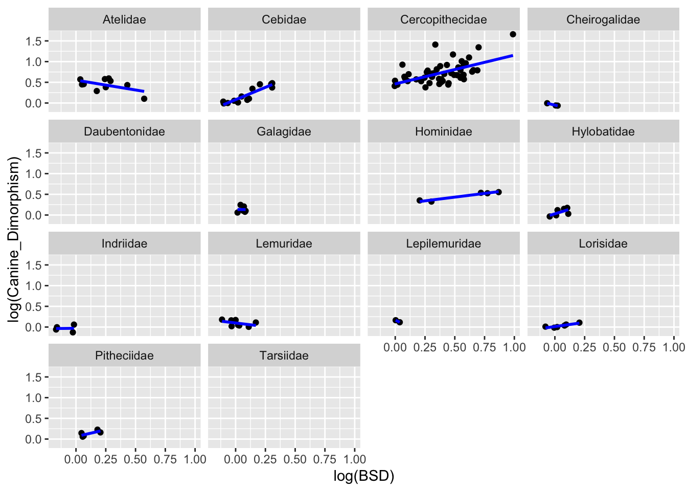

Plot the relationship between day range length (y axis) and time spent moving (x axis)
Because the distribution of the raw data is skewed, I performed log transformation.
p1 <-ggplot(d, aes(x=log(Move), y=log(DayLength_km)))+geom_point(na.rm=T)+geom_smooth(method ="lm", se =FALSE, color ="blue", na.rm=T)+stat_cor(method ="pearson", size =4)p1
`geom_smooth()` using formula = 'y ~ x'
Warning: Removed 160 rows containing non-finite outside the scale range
(`stat_cor()`).
p2 <-ggplot(d, aes(x=log(Move), y=log(DayLength_km)))+geom_point(na.rm=T)+facet_wrap(~ Family)+geom_smooth(method ="lm", se =FALSE, color ="blue",na.rm=T)p2
`geom_smooth()` using formula = 'y ~ x'
Generally speaking, species that spend more time moving travel farther. But the pattern is not consistent in different primate families.
We can see the positive relationship between traveling time and length in family Atelidae, Cebidae, and Hylobatidae. Family Cercopithecidae and Lemuridae show a weak trend, indicating little relationship between traveling time and length. Family Hominidae has a negative relationship between traveling time and length.
Plot the relationship between day range length (y axis) and group size (x axis), overall and by family.
Because the distribution of the raw data is skewed, I performed log transformation.
p3 <-ggplot(d, aes(x=log(MeanGroupSize), y=log(DayLength_km)))+geom_point(na.rm=T)+geom_smooth(method ="lm", se =FALSE, color ="blue",na.rm=T)+stat_cor(method ="pearson", size =4)p3
`geom_smooth()` using formula = 'y ~ x'
Warning: Removed 120 rows containing non-finite outside the scale range
(`stat_cor()`).
p4 <-ggplot(d, aes(x=log(MeanGroupSize), y=log(DayLength_km)))+geom_point(na.rm=T)+facet_wrap(~ Family)+geom_smooth(method ="lm", se =FALSE, color ="blue",na.rm=T)p4
`geom_smooth()` using formula = 'y ~ x'
Overall, species in larger groups tend to travel farther per day, likely due to increased foraging needs or intragroup competition. But it’s not a strict linear relationship.
Atelidae, Cebidae, Cercopithecidae, Pitheciidae, and Hominidae all show a clear positive relationship, meaning larger groups in these families tend to travel farther. Lemuridae and Indriidae exhibit weak or no clear relationship, suggesting that in some lemur species, other factors (e.g., food distribution) might influence movement more than group size. Hylobatidae and Cheirogaleidae have very few data points, making it difficult to determine a trend.
Plot the relationship between canine size dimorphism (y axis) and body size dimorphism (x axis) overall and by family.
Because the distribution of the data is skewed, I performed log transformation.
p5 <-ggplot(d, aes(x=log(BSD), y=log(Canine_Dimorphism)))+geom_point(na.rm=T)+geom_smooth(method ="lm", se =FALSE, color ="blue", na.rm=T)+stat_cor(method ="pearson", size =4)p5
`geom_smooth()` using formula = 'y ~ x'
Warning: Removed 94 rows containing non-finite outside the scale range
(`stat_cor()`).
p6 <-ggplot(d, aes(x=log(BSD), y=log(Canine_Dimorphism)))+geom_point(na.rm=T)+facet_wrap(~ Family)+geom_smooth(method ="lm", se =FALSE, color ="blue", na.rm=T)p6
`geom_smooth()` using formula = 'y ~ x'

There is a strong positive correlation between body size dimorphism (BSD) and canine dimorphism in primates.
Cercopithecidae shows a clear positive relationship between BSD and canine dimorphism.Cebidae shows a positive trend similar to Cercopithecidae but with less variation. Hominidae and Hylobatidae shows a weak positive trend. In contrast, lemurs (Lemuridae, Indriidae) and other strepsirrhines (Lorisidae, Galagidae) show little to no correlation, likely reflecting weaker sexual selection. Atelidae displays a negative trend, suggesting ecological or social factors may influence dimorphism differently.
Create a new variable named diet_strategy and plot
d <- d %>%mutate(diet_strategy =case_when( Fruit >=50~"frugivore", Leaves >=50~"folivore", Fruit <50& Leaves <50~"omnivore", TRUE~NA))d %>%filter(!is.na(diet_strategy)) %>%ggplot(aes(x = diet_strategy, y = MeanGroupSize)) +geom_boxplot() +theme_minimal() +labs(x ="Dietary Strategy", y ="Group Size", title ="Group Size by Dietary Strategy") +theme(axis.text.x =element_text(angle =45, hjust =1))+stat_compare_means(method ="kruskal.test", label.y =95)
Warning: Removed 19 rows containing non-finite outside the scale range
(`stat_boxplot()`).
Warning: Removed 19 rows containing non-finite outside the scale range
(`stat_compare_means()`).
There is no significant difference in group size among folivores, frugivores, and omnivores.
In one line of code, using {dplyr} verbs and the forward pipe (|> or %>%) operator